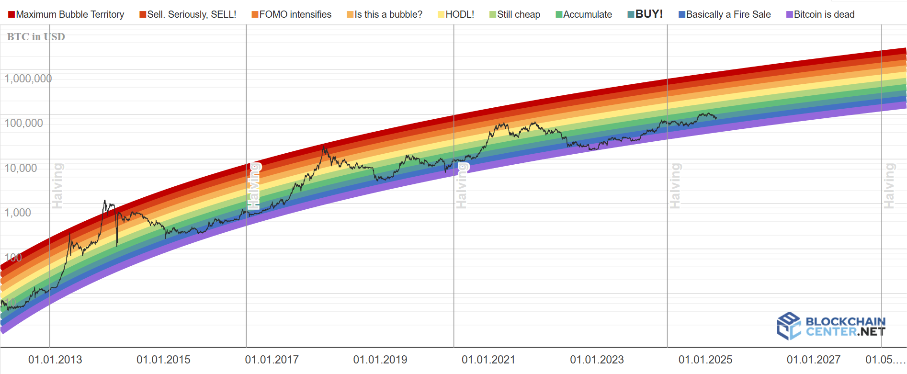

Level 2
Hvorfor Bitcoin kunne være din næste smarte investering
Har du hørt om folk, der blev millionærer på Bitcoin? Det er ikke bare held - det er fordi Bitcoin har vist sig at være en af de mest værdifulde investeringer i det sidste årti. Fra at koste næsten ingenting i starten er prisen på én Bitcoin steget til titusindvis af dollars i dag. Men hvorfor?
Bitcoin er begrænset – der vil kun nogensinde blive lavet 21 millioner bitcoins. Det gør den sjælden, ligesom guld, og når noget er sjældent, stiger værdien ofte, hvis folk vil have det. Samtidig bliver flere og flere virksomheder, som Tesla og PayPal, begyndt at acceptere Bitcoin, hvilket gør den mere værdifuld i den virkelige verden.
Selvfølgelig er der risici – prisen kan svinge meget. Men for mange er det netop spændingen: Køb lavt, sælg højt, eller behold det som en langsigtet investering. Tænk på det som "digitalt guld" – en chance for at være med i noget stort, inden alle andre hopper med på vognen.
Giv op :( ⬅ Tilbage Næste Level: Bitcoin er frihed ➡